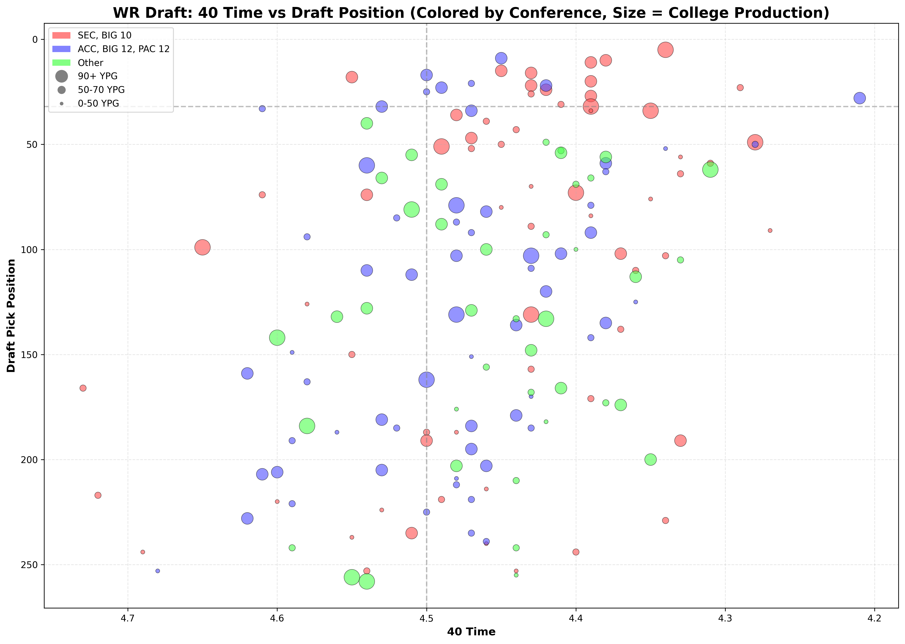
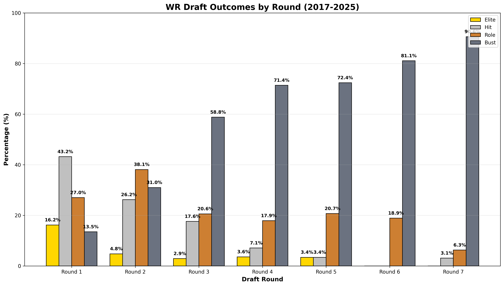
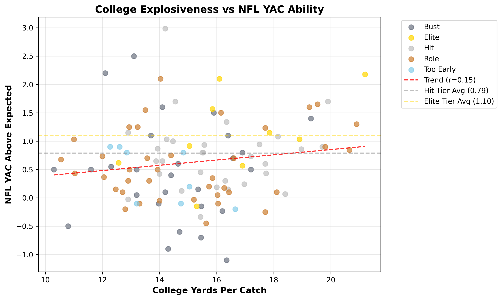

Quinn Glenn
Data Analyst | Storyteller
I'm a data analyst with a writer's mindset. I enjoy the rigor of putting numbers into Python and SQL, finding whatever I can through dashboards, cleaning data, and solving problems with numbers. But I believe that data doesn't stop at numbers. Every data set has a story, whether that be what a first down conversion percentage means or a quarterly gain from a fortune 500 company. That's why I dedicate my free time to writing. Building a writer's mindset allows you to see the stories that others don't in their data.
I believe clarity is a skill. Whether it's a chart or a chapter, my job is to make the complex feel simple. I'm currently deep in NFL analytics, turning game data into visual stories that drive decisions.

I combined college production, combine testing, and NFL outcomes for 292 wide receivers (2017–2025) to answer one question: Which pre-draft metrics actually separate stars from busts?

40-time vs. draft position — speed drives where you're picked

Hit rate drops sharply after Round 2

YAC above expected: the true separator of NFL success, with college YPC being the biggest predictor of YAC above expected
Faria Education Group
Trio
B.S. Applied Computer Science — Simulation & Game Programming
Communications Minor
Relevant Coursework
Why Communication?
Without being able to communicate or explain the things you do, it won't be important.
In analytics, finding the story is only half the battle.
Telling it clearly is what drives change.
Senior Project: Built a Pokémon-style game for pharmacy students — instead of battles, players answered pharmacy questions to progress. (Because learning should be fun.)